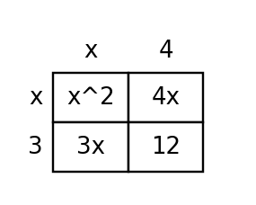

Factoring Trinomials
Learning Target
Students will factor quadratic trinomials using patterns, products, sums, and structure.
- I can build factored forms of quadratic trinomials using product-sum relationships.
- I can use patterns in coefficients and constants to factor quadratic trinomials.
- I can predict missing factors or terms by extending product-sum reasoning.
Vocabulary / Key Notation Preview
trinomial, binomial factor, product-sum relationship, factor pair, quadratic
Sort the vocabulary. Write each vocabulary word in the column that best matches what you know right now. You may move a word later.
| Know for sure | Recognize | Don't know yet |
|---|---|---|
What's to Come
DO NOT SOLVE IT YET.
Circle anything familiar, underline symbols, labels, conditions, data, or features that seem important, and write short notes about what you think may matter later.
The rectangle below is partitioned into four regions. Use the side pieces and cell areas to determine the total area in expanded form and as a product. What coefficient relationships make the two forms equivalent?

Teaching note: Notice what students mark as familiar, what structure they identify, and whether they connect the representation to prior distributive or quadratic ideas. Keep the task unresolved during the preview.
Let's Get Started
Skim the section. Record what catches your attention before you read closely.
| What I noticed | |
|---|---|
| What I predict | |
| What I wonder |
READ IN SHORT CHUNKS.
Annotate the words and visuals together. Underline evidence, circle or highlight bold vocabulary, label arrows, measurements, or important features, connect sentences to figures, and jot short questions or connections in the margins.
I can build factored forms of quadratic trinomials using product-sum relationships.
A quadratic expression has a highest variable power of 2. A three-term expression is a trinomial. Factoring a quadratic trinomial reverses binomial multiplication: instead of multiplying two binomials to make a trinomial, we start with the trinomial and reconstruct the binomial factors that could have produced it.
For a monic trinomial $x^2+bx+c$, the key relationship comes from $(x+m)(x+n)=x^2+(m+n)x+mn$. The same two numbers control two features: their product becomes the constant $c$, and their sum becomes the middle coefficient $b$. This is the product-sum relationship.
A factor pair for $c$ is only a candidate. The pair must also create the required middle term. In $x^2+7x+12$, the pair 3 and 4 works because $3\cdot4=12$ and $3+4=7$. A pair such as 2 and 6 has the correct product but the wrong sum, so it cannot produce the original trinomial.
Signs matter because they affect both the product and the sum. If $c$ is negative, the two numbers have opposite signs. If $c$ is positive, they have the same sign, and the sign of $b$ tells whether both are positive or both are negative. These relationships narrow the search before any expansion check.
- In $(x+m)(x+n)$, what do $m+n$ and $mn$ become after expansion?
- Why is a correct product alone not enough to choose a factor pair?
- How can the sign of the constant term help you predict the signs in the factors?
Discussion support: 1. $m+n$ becomes the coefficient of $x$ and $mn$ becomes the constant term.
2. The pair must satisfy both the product and sum relationships; the correct product can still create the wrong middle coefficient.
3. A negative constant requires opposite signs; a positive constant requires matching signs, with the middle coefficient helping determine whether they are positive or negative.
For $x^2+bx+c$:
$(x+m)(x+n)=x^2+(m+n)x+mn$
| Need | Relationship |
|---|---|
| middle coefficient | $m+n=b$ |
| constant | $mn=c$ |
Example 1: Build Factors from Product and Sum
Factor $x^2+7x+12$.
Teacher answer: $(x+3)(x+4)$
You Try It 1: Build Factors from Product and Sum
Factor $x^2+9x+20$.
Teacher answer: $(x+4)(x+5)$
- Why does a negative constant force the two binomial constants to have opposite signs?
Discussion support: Two numbers with a negative product must have opposite signs.
Example 2: Use Signs in Product-Sum Reasoning
Factor $x^2-x-12$.
Teacher answer: $(x-4)(x+3)$
You Try It 2: Use Signs in Product-Sum Reasoning
Factor $x^2+2x-15$.
Teacher answer: $(x+5)(x-3)$
I can use patterns in coefficients and constants to factor quadratic trinomials.
When the leading coefficient is not 1, the same multiplication structure still controls the factorization. A product such as $(2x+1)(x+3)$ creates the first term from $2x\cdot x$, the last term from $1\cdot3$, and the middle term from the two cross-products $6x+x$. The middle coefficient records a sum of cross-products, not a random number.
One useful strategy is to organize the pieces with an area model or partial products. For $ax^2+bx+c$, look for two middle pieces whose product is $ac$ and whose sum is $b$, then group those pieces so common factors reveal the binomials. The goal is not memorizing a trick; it is reconstructing the multiplication that made the trinomial.
Tables are especially useful for monic trinomials because they make the candidate pairs visible. List factor pairs of the constant and compare their sums. Stop when both conditions are satisfied. This keeps the search systematic and makes it easy to explain why one pair works while another does not.
Whatever strategy you choose, the final check is expansion. Multiply the binomial factors and verify all three terms, especially the middle term. A product with the correct first and last terms can still be wrong if its cross-products do not combine to the required middle coefficient.
- Where does the middle term come from when two binomials are multiplied?
- How does a product-sum or factor-pair table make factoring more systematic?
- Why should the middle term receive special attention when checking a factorization?
Discussion support: 1. It comes from adding the two cross-products.
2. It lists candidate factor pairs and their sums so both required conditions can be checked rather than guessed.
3. The first and last terms can match while the cross-products combine to the wrong middle coefficient.
In $(2x+1)(x+3)$, the partial products are $2x^2$, $6x$, $x$, and $3$. The cross-products combine: $6x+x=7x$. So $(2x+1)(x+3)=2x^2+7x+3$.
Example 3: Factor When the Leading Coefficient Is Not 1
Factor $2x^2+7x+3$.
Teacher answer: $(2x+1)(x+3)$
You Try It 3: Factor When the Leading Coefficient Is Not 1
Factor $3x^2+10x+3$.
Teacher answer: $(3x+1)(x+3)$
- What information is carried by the cross-products that is not visible from the first and last terms alone?
Discussion support: The cross-products determine the middle coefficient, so they distinguish candidate products that otherwise have matching first and last terms.
Example 4: Organize Factor Pairs
For $x^2+11x+24$, make a product-sum table of factor pairs of 24 until you find a pair with sum 11, then factor.
Teacher answer: The pair is $3,8$; $(x+3)(x+8)$.
You Try It 4: Organize Factor Pairs
For $x^2-x-20$, find integers whose product is -20 and sum is -1, then factor.
Teacher answer: The pair is $4,-5$; $(x+4)(x-5)$.
I can predict missing factors or terms by extending product-sum reasoning.
Product-sum reasoning can also work backward from partial information. If you know one factor of a monic trinomial, the constant tells you the constant term of the missing factor, and the middle coefficient checks the sum. You do not need to restart with random guesses.
For example, if $x^2+2x-24$ has factor $(x+6)$, the missing constant must multiply with 6 to make $-24$, so it must be $-4$. The middle check gives $6+(-4)=2$, confirming $(x+6)(x-4)$. One known factor therefore constrains the other.
The same logic diagnoses incorrect factorizations. A student might choose numbers whose product is correct but whose sum is not. Expanding the proposed binomials reveals exactly which coefficient fails. That evidence is stronger than simply saying the answer is wrong.
Predicting a missing factor and critiquing a wrong one both depend on the same structural idea: the coefficients of the trinomial are connected to the multiplication inside the binomial product. Factoring is successful when all of those connections agree at once.
- If one factor is known, which coefficients can constrain the missing factor?
- How can expansion diagnose a proposed factorization that has the right constant product but the wrong middle term?
- Why are “find the missing factor” and “diagnose the error” really the same kind of structural reasoning?
Discussion support: 1. The constant term constrains the missing constants, and the middle coefficient checks their sum/cross-product contribution; the leading coefficient can also constrain variable coefficients.
2. Expand the proposed product and compare the resulting middle coefficient with the original.
3. Both tasks test whether one set of factors satisfies all coefficient relationships created by binomial multiplication.
- Multiply the factors.
- Combine like terms.
- Compare the $x^2$, $x$, and constant coefficients with the original trinomial.
Example 5: Predict a Missing Factor
One factor of $x^2+2x-24$ is $(x+6)$. Determine the missing factor without expanding random guesses.
Teacher answer: The missing factor is $(x-4)$.
You Try It 5: Predict a Missing Factor
One factor of $x^2-7x+12$ is $(x-3)$. Determine the missing factor.
Teacher answer: The missing factor is $(x-4)$.
- If a proposed factorization has the correct constant but the wrong middle term, what relationship failed?
Discussion support: The sum/cross-product relationship that creates the middle coefficient failed.
Example 6: Diagnose a Product-Sum Error
A student says $x^2+8x+15=(x+1)(x+15)$ because $1\cdot15=15$. Diagnose the error and factor correctly.
Teacher answer: The constants must multiply to 15 and add to 8. Use 3 and 5: $(x+3)(x+5)$.
You Try It 6: Diagnose a Product-Sum Error
A student says $x^2-x-12=(x-6)(x+2)$. Diagnose the error and factor correctly.
Teacher answer: The constants -6 and 2 multiply to -12 but add to -4, not -1. Correct: $(x-4)(x+3)$.
Summary
- Treat factoring as reverse binomial multiplication.
- For $x^2+bx+c$, choose numbers whose product is $c$ and whose sum is $b$.
- For nonmonic trinomials, track the cross-products that create the middle term.
- Use known factors and coefficient relationships to predict missing pieces.
- Expand to verify every proposed factorization.
Common Mistakes
- Choosing a factor pair because the product is correct while ignoring the required sum.
- Losing track of signs when the constant is negative.
- Checking only the first and last terms of a binomial product.
- Treating a known factor as a cue to guess instead of using coefficient constraints.